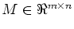

Assume that the problem (P) has an optimal solution
- (a)
- What is the dual to this linear program?
- (b)
- Use complementary slackness to find an optimal solution
to the dual problem.
- (a)
- Looking purely at the optimal dual solution you found above, can you conclude that no optimal primal solution will have x4>0? What about x5?
- (b)
- The optimal dual solution
is not unique: there are
other optimal solutions of the form
.
What is the largest possible value of ?
Do these other optimal solutions imply anything about the values of
,
and
 ?
Do they imply anything about the values of x4 and x5 in any
optimal solution to (P)?
?
Do they imply anything about the values of x4 and x5 in any
optimal solution to (P)?
For and , exactly one of the following holds:
- (a)
- (b)
First observe that both (a) and (b) can not hold simultaneously. Thus, it suffices to show that when (a) fails, (b) must hold. Next assume (a) fails and then construct an x which satisfies (b).(Hint: You may assume that, given a matrix  and a vector , there exist unique p' and p'' such that p=p'+p'', Mp'=0, p''=MTq for some q, and p'Tp''=0. The vector p' is the projection of p onto the nullspace of M.)